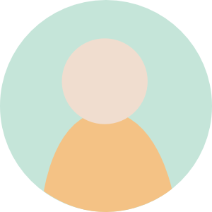

Send some cheer and luck to new pages!


Do you know anyone in need of some cheering up from those who love and support them? Sending love and good luck is just a few clicks away with cheerluck!
You can create and contribute to pages of hope for those who need it the most, whether they be a close family member or someone you've never met.
Instantly record and post video with a webcam, as well as post images and text, all in one place. Then, share the link with the recipient so they can keep coming back to this special keepsake you and others have contributed to.
Cheer someone up with cheerluck today!
Once a page is created...
2. Click on "Send Cheer!" to submit your video, photo, or text
3. Your post will be uploaded to that person's cheerluck
4. Watch that person's cheerluck page grow with other people's wishes of love and good luck!
The recipient of the page, upon being given the link, will have a sweet online keepsake to help get through their tough times.